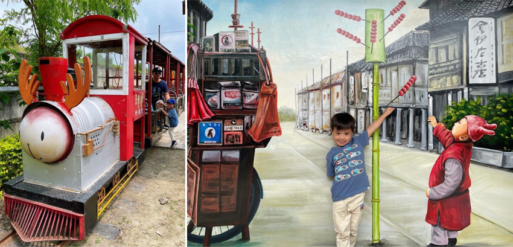
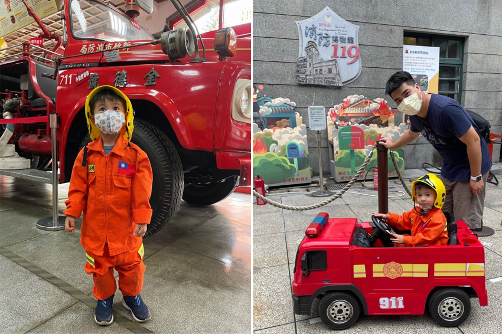
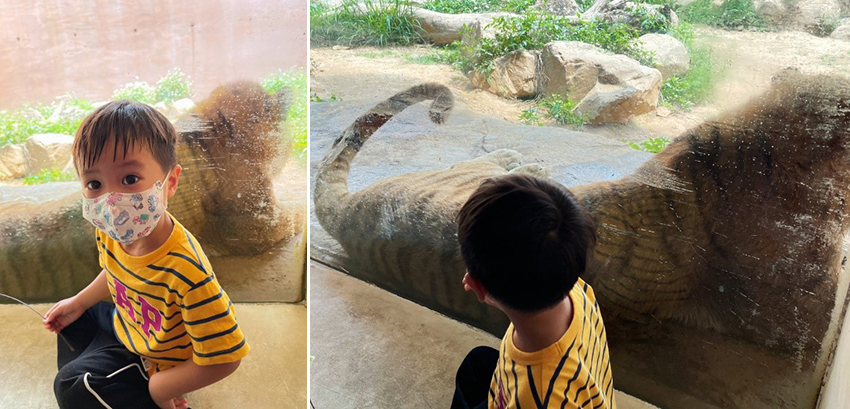
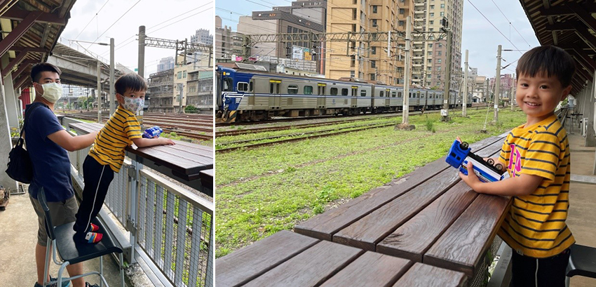

近期因為疫情關係，使得國內旅遊大爆發，而台灣各地也新增了許多新景點，本次選擇了新竹的幾個景點，趁著兒童節連假，安排了一趟兩天一夜的新竹市區之旅，輕鬆又新奇的親子旅遊，可以增進孩子間的感情，又可放鬆平時忙碌生活的壓力。
槺榔驛古輕便車道
距離新竹市區不遠的地方有個隱藏版的景點，在寧靜的社區出現了一台令人眼睛為之一亮的糜鹿小火車，而且搭配了一座具有日治古蹟風味的小車站，這個社區因為早期種植許多槺榔樹，因此稱為"槺榔驛"，古輕便車是從日據時代就已經建造，更是那時代往來竹塹舊港與市區之間的重要運輸工具，後來保留了一小部分的鐵道，轉變為觀光景點並保留了文化資產的歷史價值，當地社區居民組成的服務隊透過超可愛的麋鹿小火車帶著遊客認識歷史。整趟車程大概五十分鐘，沿途會有導覽解說，可以乘坐著火車體驗農村的純樸之美，每位乘客只要付出五十元，就可踏上輕鬆且多元的小火車之旅，一路上有許多的彩繪和十二生肖的裝置藝術，經過時小火車會暫時停下讓遊客下車拍照打卡，整個車程十分有趣，兒子坐在小火車上時興奮不已。
|  |
新竹市區消防博物館
兒子就對於消防車有著憧憬的夢想，但平時只能遠遠的站在消防隊外面看著消防車，所以特地安排了這個景點，讓兒子能當個小小消防員過癮一下，消防博物館是1936年建築而成，而現在建築仍有一半是正式的消防局，此處是免費的親子景點，正式進入大廳後，目光立刻被一輛古董級消防車爺爺"金德號"所吸引，兒子在零距離看到如此龐然大物更是目瞪口呆，且還展示了許多早期消防設備和文物，讓人了解了救火方式的演進。最有趣的是裡面還提供了小朋友的消防衣與消防盔體驗，可以帥氣的穿著消防服體驗救災和開消防電動車，還有3D的立體壁畫，可以融合救難現場，讓每個小朋友都可以化身為小小救難英雄，且藉此機會可以讓兒子認識消防和防災的重要性，是個寓教於樂的景點。
|  |
新竹動物園
2020年重新整修開幕，雖然沒有台北市立動物園的氣派奢華，但多添了幾分現代建築藝術的時尚，整體園區有特殊設計的觀賞玻璃，能近距離觀賞動物的機會，動物園打造無籠子空間以對動物友善概念，讓遊客能更親近動物，其中令人印象最深刻是動物觀景隧道近距離看著猛獸老虎，隔著一道玻璃，欣賞老虎在眼前活動的霸氣，彷彿連呼吸都快窒息，兒子還害怕到不太敢靠近，是很棒的體驗，到了用餐時間，走進旁邊的森林食堂用餐，可以透過落地窗直接俯瞰餐廳下方的羊駝區，雖然動物園園區不大，但驚喜的程度足已讓小朋友流連忘返。
|  |
鐵道藝術村
對於鐵道迷的三歲小孩來說，這是個絕佳的景點，這裡是一個可以近距離觀賞火車經過的地方，原為台鐵倉庫，後來登記為歷史古蹟，濃濃的日式風格建築，近幾年煥然一新改為鐵道藝術村，裡面有餐廳、文創工作室，而且還會不定期舉辦展覽，但最棒的是戶外區離軌道只有一牆之隔，火車會近距離地從眼前飛馳過，且能坐在月台上喝著飲料看著火車挺愜意，對火車迷來說真是興奮不已。
|  |
旅行接近尾聲，這兩天兒子玩得不亦樂，旅遊的目的，就是在於親眼見證各種景物帶給視覺的衝擊，並深刻的烙印在腦海中，新竹是個很適合全家人來遊玩放鬆的好地方，簡單的行程，享用美味的大餐，不妨可以趁著周休二日帶著全家大小安排個新竹輕旅行。